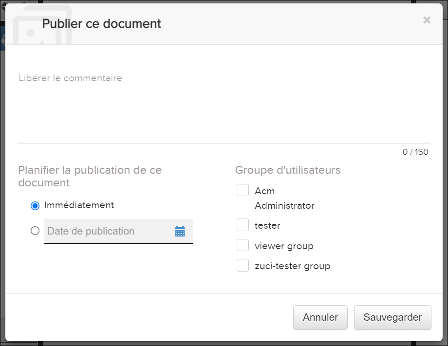

Non applicable pour Pinpoint Standalone Light.
La fonctionnalité de publication n'est disponible que pour les publications publiées en tant que versions provisoires vers Pinpoint. Un utilisateur avec les privilèges appropriés peuvent consulter le brouillon, puis le distribuer aux groupes d'utilisateurs ayant accès à la publication révision.
Publier une fonctionnalité de révision de publication est conçue comme un planificateur, ce qui permet à l'utilisateur de contrôler la date et l'heure auxquelles une publication peut être affichée en tant que version publiée. L'utilisateur peut choisir de programmer la publication de la publication soit immédiatement, soit à une date et une heure souhaitées dans le futur.
Pour planifier une version pour la révision de la publication, procédez comme suit:
-
Dans le menu
 Opérations de publication, sélectionnez l'option de menu
.
Opérations de publication, sélectionnez l'option de menu
.
Conseil: Si cette option de menu ne s'affiche pas, il se peut que vous ne disposiez pas des autorisations appropriées.
S'il s'agit de la première révision d'une publication, une boîte de dialogue Publier le document s'affiche.
S'il s'agit de la deuxième révision (ou d'une révision ultérieure), vous ne verrez pas cette boîte de dialogue. L'application copiera alors les paramètres de privilège de la révision précédente et la libération sera immédiate.Remarque : Un utilisateur ne peut libérer que des groupes d'utilisateurs au sein de son organisation. -
Optionnel. Entrez un commentaire pour la publication.
Lorsque vous ajoutez un commentaire, vous pouvez l'afficher en sélectionnant l'icône
 dans le visualiseur Pinpoint (métadonnées de
publication) et le Data Manager (commentaires de publication).
dans le visualiseur Pinpoint (métadonnées de
publication) et le Data Manager (commentaires de publication).